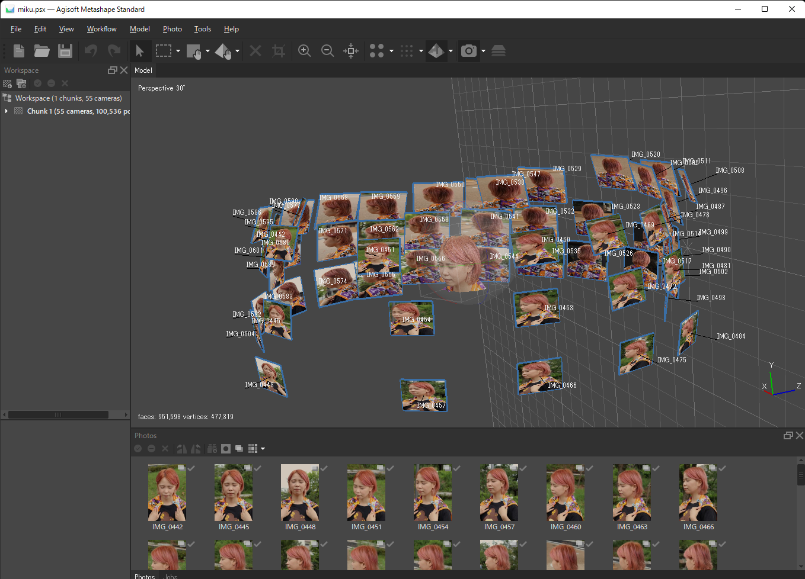
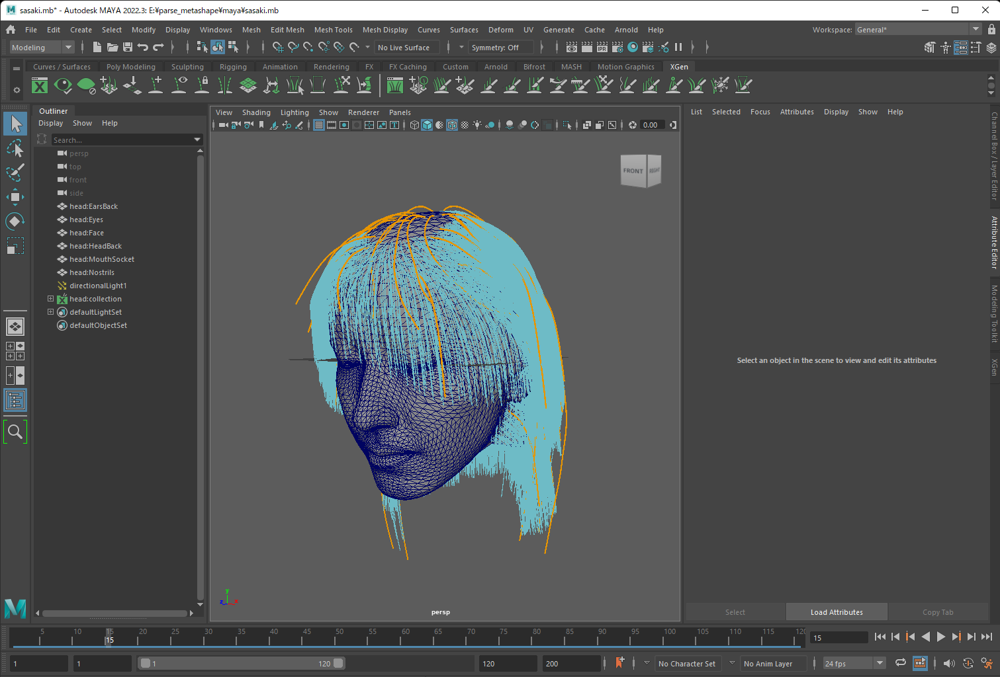
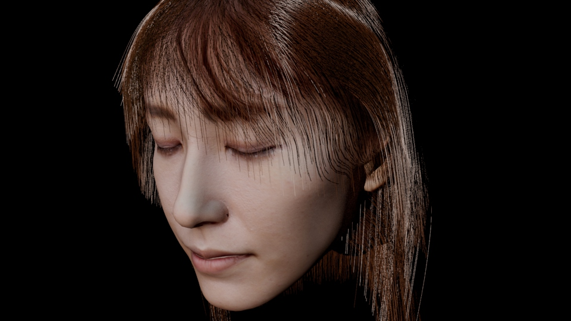

フォトグラメトリ向けヘア作成ツール

リアルな人キャラクター生成においてフォトグラメトリは一般的に使われるようになってきています。人のモデリング、肌テクスチャの抽出、ブレンドメッシュの作成などは自動化が進む一方で、髪の毛、目、歯といったモデリングは依然として人力で行われているのが一般的です。
映画やゲーム産業では髪の毛のモデリングに Maya xGen や Ornatrix といったツールが使われることが一般的です。これらを使い strand を一本一本モデリングを行います。最近ではグルームツールを使いヘアをブラシのようになでてモデリングすることもよく行われています。一方で、これらのstrand 作成ツールは物理要素などが考慮されておらず画面を切り替えては微調整するといった作業を繰り返し、時間がかかることがあります。
我々はマルチビューのフォトグラメトリに特化した strand 作成ツールを開発しました。これらは物理要素 (重力や髪のしなり、交差判定)を考慮し、strand の編集後のシミュレーションもリアルタイムに動作します。
バイナリはこちらから入手できますので、C:/parse_metashape に展開し、16_UserStudy1/16_UserStudy1.exe をおすとプログラムが起動します。↑のは 4 倍速で作業した動画になります。
操作方法
Alt おした状態でマウス左クリック押しっぱなしでビューの回転ができ、マウス左クリックを離すと最寄りのビューに飛ぶ
strand を選択した状態で Ctrl + 左クリックを押しっぱなしで strand をひける
strand を選択した状態で根本の球をクリックして動かすことでヘアの根本を移動させることができる
strandを選択した状態で Enter で strand を引いたビューに切り替えできる
strand を作成したビューで髪を選択した状態で Ctrl + 左クリックで、strand を消せる
キーボードの [ ボタンを押すことで strand ヘアを 10 本追加する
キーボードの 1-4 で、ベースのキャラクターを変更する
キーボードの 1-4 で、ベースのキャラクターを変更する
File -> Save で作業途中結果を保存でき File -> Open で作業途中結果をロードできる
File -> Export で alembic ファイルにエクスポートできる。カーブとして Maya にインポートして xGen の curve -> strand 変換機能を使うことで Maya でも使用することができる


生成した strand は alembic フォーマットとして Maya にインポートすることが可能なため、各プロダクションツールのワークフローに容易に組み込むことが可能です。
将来サポート予定機能
複数の strand を同時選択できるようにする
strand をカールする機能の追加
新規に strand を追加する際に既存の strand から補完を行ってくれる機能
email: ShinichiKinuwaki [at] gmail.com